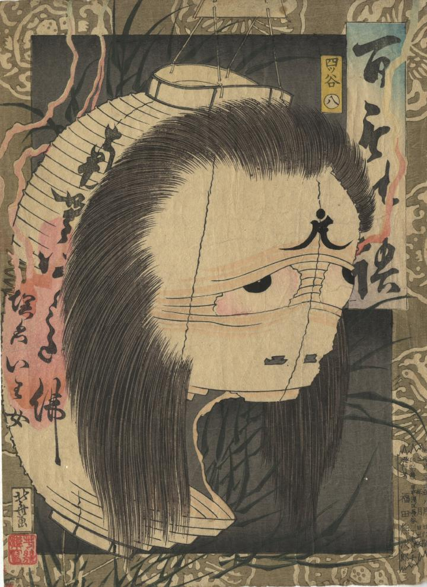

四谷怪談のお岩が提灯になって現われている。口の部分がおおきく破れて開いている。額に梵字が書かれている。
著作者：芳幾／出典：親書誌：U426_nichibunken_0420：百もの語 四ツ谷；ヒャクモノガタリ ヨツヤ／日付：2015／資源識別子：U426_nichibunken_0420_0001_0000
Copyright (c)2010- International Research Center for Japanese Studies, Kyoto, Japan. All rights reserved.